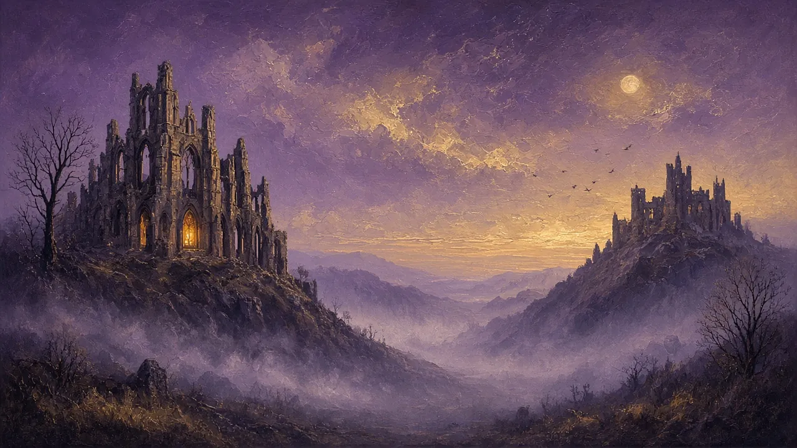
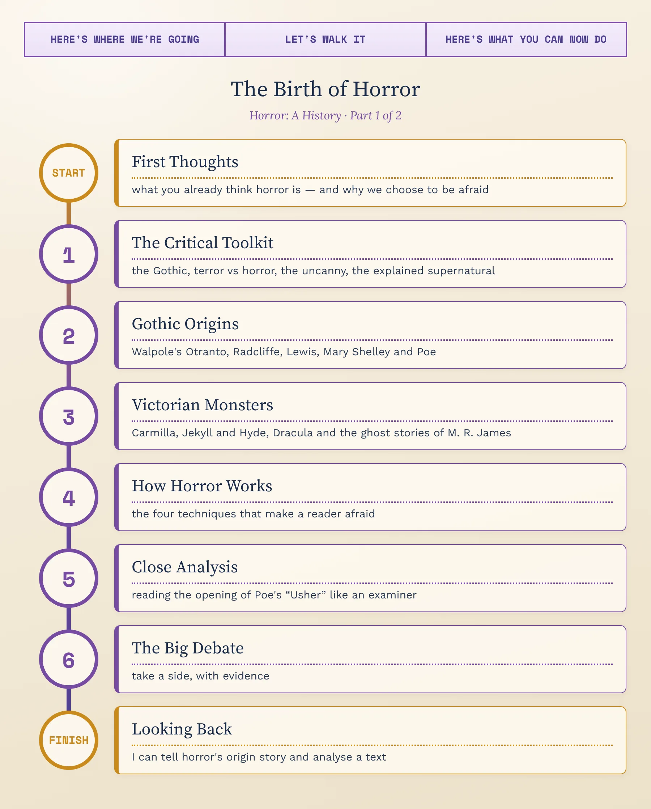
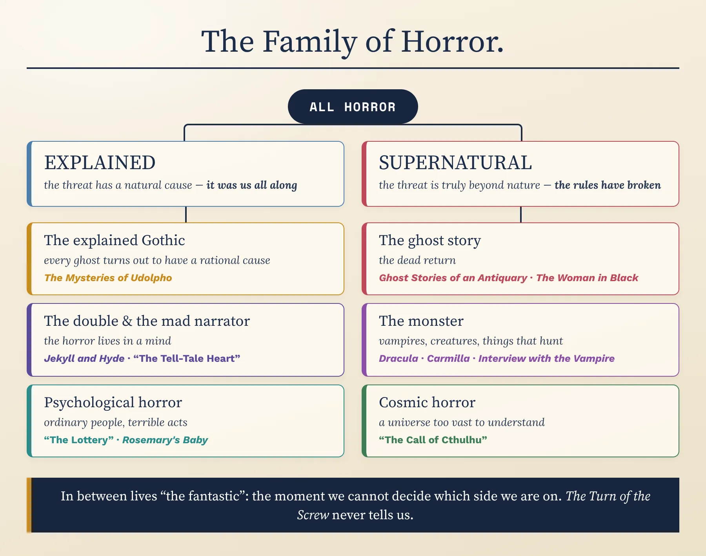
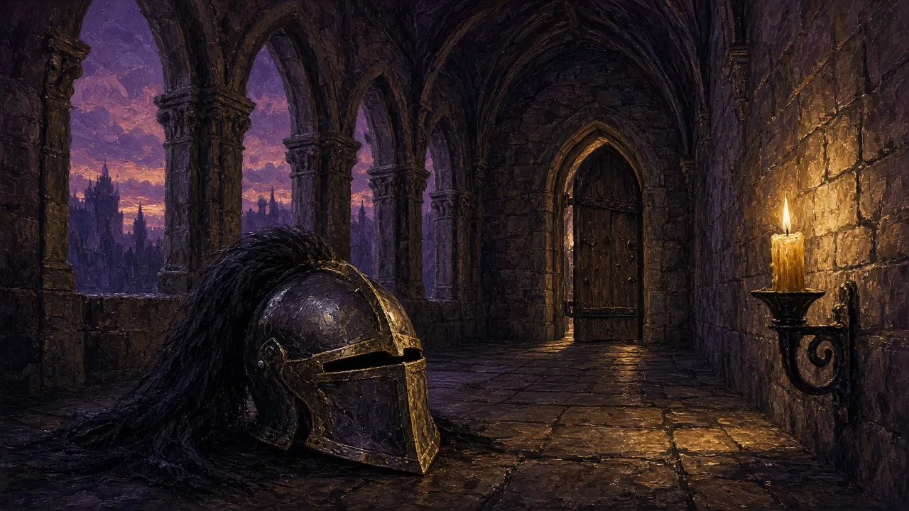
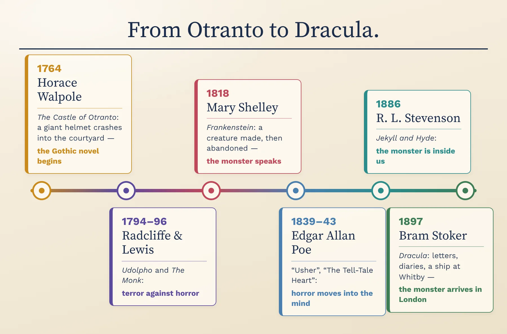
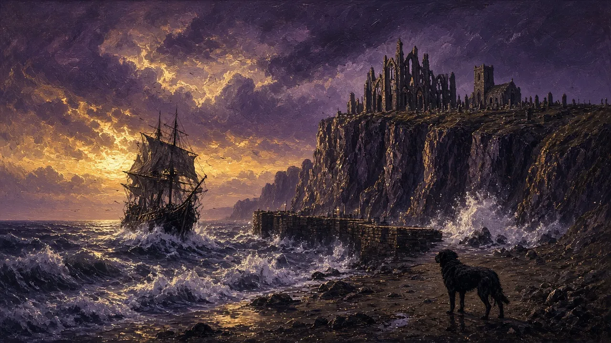
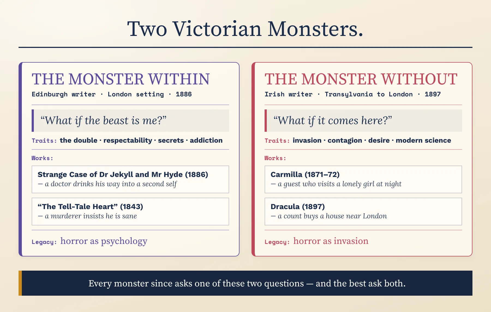
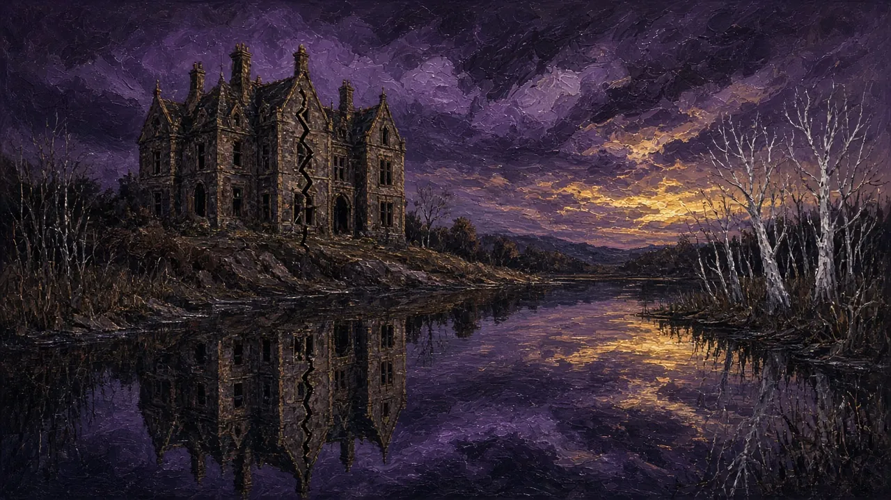
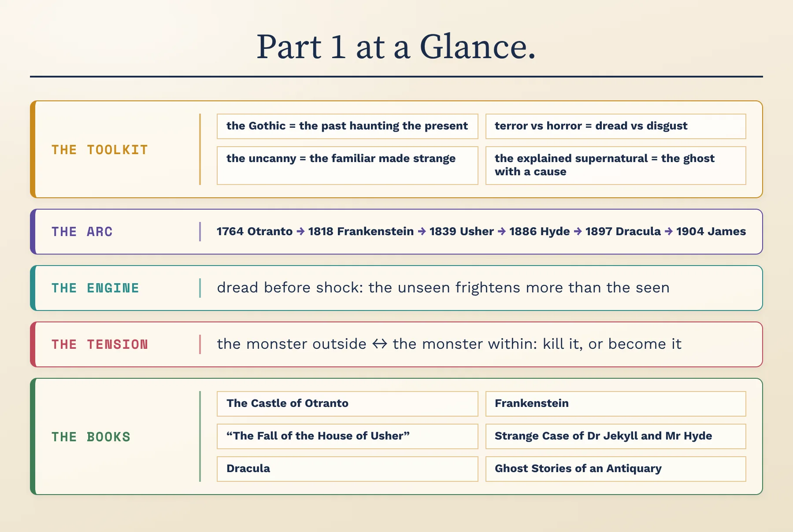

Gothic Origins & How Fear Works · C1/C2 · Speaking, Analysis & Discussion

Horror is the only genre named after the feeling it wants to give you. It is often dismissed as cheap thrills — a creaking door, a scream, a monster in the dark. Yet some of the most influential books ever written are horror stories: Frankenstein, Dracula, Dr Jekyll and Mr Hyde. Underneath the shocks, horror asks hard questions — what we are afraid of, what we try to hide about ourselves, and what happens when the past refuses to stay buried. Over these two lessons we'll trace how it grew from one rich man's strange little novel about a haunted castle into a global literature — and examine how it works on a reader.
Before we begin — think aloud, no notes. There are no wrong answers yet:
When you hear “horror story,” what three images come into your head first? Where do you think those images came from — books, films, or childhood?
Think of a story — a book, a film, a series, even a campfire tale — that genuinely frightened you. What exactly frightened you: something you saw, something you only imagined, or an idea that stayed with you afterwards?
Gut instinct, before we study anything: why would anyone choose to be frightened? By the end of today you'll answer this again with evidence.
To discuss horror at an advanced level you need metalanguage — precise critical terms for what a text is doing. First, the biggest map of all: the family of horror, and the one question that splits it in two.
The critic Tzvetan Todorov, in his book The Fantastic (1970), noticed that many uncanny stories make us hesitate: are the strange events really supernatural, or is there a natural explanation — a trick, a dream, a disturbed mind? If the story finally explains everything, it falls on one side (Todorov called it the uncanny). If it confirms that the supernatural is real, it falls on the other (the marvellous). The fantastic, for Todorov, lives only in the moment of doubt. Horror uses both sides:
Apply the test. A film where the “ghost” turns out to be a living person in disguise — is it still a horror story? And a story about a real serial killer, with nothing supernatural at all — horror, or crime? Defend a placement for each.

The map splits horror into stories where the threat is finally explained and stories where it is truly supernatural, with their branches underneath. Put three frightening stories you know onto it. Then take one hard case — a story that never tells you whether the ghost was real — and argue where it truly belongs, using Todorov's test: does the story end your doubt, or leave you in it?
Four terms run through everything that follows — they are the names critics and writers use for what horror actually does.
The word first meant the Goths, a Germanic people of late antiquity; by the eighteenth century it had come to mean anything medieval — pointed arches, ruined abbeys, “barbaric” superstition. When Horace Walpole put “A Gothic Story” on the title page of his novel's second edition in 1765, he gave a name to a whole kind of fiction.
Its furniture is almost fixed: a castle or abbey full of passages and locked rooms; a tyrannical villain; a young woman in danger; a family secret; and signs that the supernatural may be at work. Underneath, its real subject is the past haunting the present — old crimes, old powers and old buildings that will not let the living go.
In 1757 the philosopher Edmund Burke argued that terror, especially when the thing we fear is obscure and half-hidden, is a source of the sublime — the overwhelming feeling we get from a storm, a cliff or the night sky. The novelist Ann Radcliffe built on this in an essay published after her death, “On the Supernatural in Poetry” (1826):
For Radcliffe, the difference lay in “uncertainty and obscurity”: terror is what we feel before we know; horror is what we feel when the dreadful thing is in front of us. Writers have argued ever since about which is the higher art.
In a famous 1919 essay, Sigmund Freud explored the German word unheimlich — literally “un-homely”. The uncanny, he argued, is not simply the strange: it is the familiar made strange, something we know well that suddenly feels wrong. His examples included doubles, dolls and automata that might be alive, and the unsettling repetition of the same thing again and again.
This explains why so much horror happens at home: the haunted house, the child who is not quite your child, the face in the mirror that is not quite yours.
Ann Radcliffe was famous for building up terrifying, apparently supernatural events — mysterious music, moving lights, a hidden horror behind a black veil — and then, near the end, explaining every one of them naturally. In The Mysteries of Udolpho (1794), the dreadful thing behind the veil turns out to be a wax figure.
Some readers felt cheated; others admired her control. The technique lets a writer enjoy the thrill of the supernatural while keeping faith with reason — and it survives today in every story where the “ghost” is unmasked as a living person.
Take any horror film, book or series you know — even vaguely. Tell me: is it Gothic? Does it rely more on terror or on horror? What is its most uncanny moment? (If nothing comes to mind, use a haunted-house ride at a fairground: dark corridors, sudden shocks, a mirror that distorts your face — start there.)
Fear has always been in stories — ghosts in ancient Greece, demons in medieval sermons, witches in Macbeth. But the horror novel has a birthday most critics agree on: December 1764. Here is that beginning, and the writers who turned it into a genre.
The writer: Horace Walpole (1717–1797), son of Britain's first prime minister, a politician, collector and gossip who had turned his house at Strawberry Hill, near London, into a miniature Gothic castle. In December 1764 he published The Castle of Otranto anonymously, pretending that it was a translation of an Italian book printed in Naples in 1529. When it succeeded, he admitted the trick, and the second edition of 1765 carried a new subtitle: “A Gothic Story”.
What happens in the story: On the wedding day of Conrad, the sickly son of Manfred, Prince of Otranto, a gigantic helmet falls from nowhere into the castle courtyard and crushes the young man to death. An old prophecy says the castle will pass from Manfred's family “whenever the real owner should be grown too large to inhabit it.” Desperate for an heir, Manfred decides to divorce his wife and marry Conrad's bride, Isabella, who flees through the dark underground passages of the castle. A portrait steps out of its frame; giant armoured limbs appear in the castle; and in the end a vast ghost rises from the ruins to reveal the true heir.
Why it counts as the first: almost every piece of Gothic furniture is already here — the castle with secret passages, the tyrant, the persecuted young woman, the family crime, the prophecy and the supernatural intrusion. Walpole wanted to combine old romance, where anything could happen, with the realistic novel of ordinary people, and in doing so he invented a form.
Notice, too: the horror is about inheritance — a family built on an old crime. From the very beginning, the Gothic is about the past refusing to stay buried.

So the founding text of horror begins with a falling helmet the size of a room — an image most modern readers find more absurd than frightening. Does that matter? What would you say the genre was invented for: to frighten, or to imagine a world where the past can literally crush the present?
For the next eighty years, the Gothic grew up fast — through two rival novelists of the 1790s, one teenager's nightmare by Lake Geneva, and one American who moved horror inside the human mind.
Ann Radcliffe (1764–1823) was the best-selling novelist of the decade. In The Mysteries of Udolpho (1794), the orphaned Emily St. Aubert is taken by her aunt's sinister husband, Montoni, to his decaying castle in the Apennine mountains, where she hears strange music, sees mysterious figures and discovers a curtained horror behind a black veil. Radcliffe stretches the suspense across hundreds of pages — and then, famously, explains it all.
Matthew Lewis (1775–1818) read Udolpho and answered it. He wrote The Monk at nineteen, in about ten weeks, and published it in 1796. Its hero, Ambrosio, a proud and admired monk in Madrid, is tempted into a chain of crimes and finally sells his soul to the Devil. Its ghosts are real, its violence is shown, and it caused a scandal.
Why the pair matters: the two books set up the argument at the heart of the genre — Radcliffe's terror of the half-seen against Lewis's horror of the fully shown. Jane Austen was still laughing at the fashion in Northanger Abbey (published in 1817), whose heroine reads Udolpho and starts to imagine crimes in an ordinary country house.
Who she was: the daughter of the philosopher William Godwin and the feminist writer Mary Wollstonecraft. In June 1816, aged eighteen, she was staying near Lake Geneva with Percy Shelley, Lord Byron and Byron's doctor John Polidori when rain kept them indoors and Byron proposed that each should write a ghost story. Polidori's attempt became The Vampyre (1819); hers became Frankenstein, published anonymously in 1818.
What happens: a young scientist, Victor Frankenstein, builds a man from dead body parts and brings him to life — then runs from what he has made. Abandoned and rejected by everyone he meets, the creature learns to speak and read, and asks his maker for a companion. When Victor refuses, the creature takes revenge on everyone Victor loves. The story is told in layers: an explorer's letters, Victor's confession, and at its centre the creature's own voice.
Why she matters: she moved the Gothic from the haunted castle to the laboratory — the monster is not sent by the past but made by the future — and she let the monster speak for himself. (Our Science Fiction lessons claim her too; she belongs to both families.)
Who he was: an orphaned, poor and brilliant American poet and magazine editor — the author of “The Raven” and the inventor of the detective story — who wrote some of the most famous horror tales in English.
“The Fall of the House of Usher” (1839): a narrator visits his sick childhood friend, Roderick Usher, in a decaying mansion beside a dark lake. Roderick's twin sister Madeline dies, or seems to, and is placed in a vault beneath the house. Days later, during a storm, she returns. The siblings die together, and the house splits along a crack and sinks into the lake.
“The Tell-Tale Heart” (1843): a narrator insists that he is not mad while describing how he murdered an old man because of his “vulture” eye — and how the imagined beating of the dead man's heart drove him to confess.
Why he matters: Poe moved horror from the castle into the mind — his narrators are often the most frightening thing in the story — and he argued, in an 1842 review of Nathaniel Hawthorne, that a short tale should be built to create “a certain unique or single effect.” Every word should serve the fear.
You've now met both Gothic rivals. One hides the horror and explains it; the other shows it and makes it real. Which approach do you think dominates horror today — in books, films and games? Argue it aloud, then compare your view with a critic's.

The line runs from Walpole in 1764 to Stoker in 1897. Cover it, and put these five in order from memory: Dracula, Frankenstein, The Castle of Otranto, “The Fall of the House of Usher”, The Mysteries of Udolpho. Then pick any two that sit next to each other and say how the later one answered or built on the earlier.
In the second half of the nineteenth century, the Gothic left its Italian castles and came home — to Austrian country houses, foggy London streets, an English seaside town and a Cambridge college. Its monsters grew more modern, and more frightening, because they could be living next door.
Victorian Britain was the richest, most industrial and most confident nation on earth — and full of anxieties. Charles Darwin's On the Origin of Species (1859) suggested that humans were animals descended from other animals, and some writers worried that people, or whole nations, could degenerate. Huge new cities hid crime and disease. Respectable people were expected to hide their desires behind strict public manners. And an empire that reached across the world raised the fear that someday something might travel back.
Critics often read the great Victorian monsters as these anxieties in physical form: the beast inside the gentleman, the foreign invader in London, the dead who will not stay in the past. Keep that reading in mind — and be ready to argue with it.

While the Gothic novel faded, the short ghost story flourished in the new popular magazines. Telling ghost stories at Christmas was an old custom, and Charles Dickens made it a publishing event with A Christmas Carol (1843) and the Christmas numbers of his magazines. Victorian writers — many of them women, such as Margaret Oliphant and Elizabeth Gaskell — turned the form into an art of suggestion: a figure on a staircase, a sound in an empty room.
Its great discovery is that the ghost story, like the detective story, works best short: fear is hard to sustain for four hundred pages, but easy to concentrate into twenty.
Many critics read Dracula as a fear of foreigners arriving in Britain. Is that reading convincing — or does it reduce a great story to a political cartoon? Make the case for it, then say one thing it misses.
Who he was: a Dublin journalist and newspaper owner who became the leading Irish writer of mystery and ghost stories of his time.
Carmilla (1871–72): first published as a serial in the magazine The Dark Blue, then in his collection In a Glass Darkly (1872). Laura, a lonely young woman living with her English father in a castle in Styria, in Austria, welcomes a beautiful guest, Carmilla, after a carriage accident outside their gates. The two become intensely close; Laura falls ill and dreams of a great cat-like creature at her bed at night. Carmilla turns out to be a long-dead countess, Mircalla Karnstein — and a vampire.
Why he matters: he made the vampire intimate, seductive and female, a guest you invite in — and his story influenced Dracula, published twenty-five years later.
Who he was: an Edinburgh-born writer, often ill, already famous for Treasure Island (1883).
Strange Case of Dr Jekyll and Mr Hyde (1886): the London lawyer Mr Utterson is disturbed that his respected friend Dr Henry Jekyll has made a will leaving everything to Edward Hyde — a small, repulsive man who has trampled a child in the street and later beats an elderly MP to death. Utterson investigates, but the truth is revealed only in two documents at the end: Jekyll had found a drug that turned him into Hyde, his own worst self set free — and he has slowly lost control of the change.
In his own words: Jekyll's final statement contains the book's central idea: “man is not truly one, but truly two.”
Why he matters: “Jekyll and Hyde” became an everyday phrase for a double personality. Stevenson put the monster inside a respectable gentleman — horror as a secret self.
Who he was: a Dublin civil servant and theatre critic who moved to London to manage the Lyceum Theatre for the great actor Henry Irving, a job he did for almost three decades while writing novels in his spare time.
Dracula (1897): the young solicitor Jonathan Harker travels to Transylvania to help a nobleman, Count Dracula, buy a house in England — and finds himself a prisoner in the Count's castle. Dracula sails to England; his ship runs aground at Whitby with its captain dead at the wheel, and a huge dog leaps ashore. In England he preys on Lucy Westenra, then on Harker's wife, Mina, until a group led by the Dutch professor Van Helsing hunts him back to Transylvania and destroys him. The whole novel is told through diaries, letters, newspaper cuttings, a ship's log and even phonograph recordings.
In his own words: as wolves howl outside the castle, the Count says to Harker: “Listen to them—the children of the night. What music they make!”
Why he matters: he brought an ancient monster into the modern world of trains, typewriters and blood transfusions — and created the most famous horror character of all time.
Who he was: a medieval scholar who became Provost of King's College, Cambridge, and later of Eton College. He wrote ghost stories to read aloud to friends at Christmas, and published them in Ghost Stories of an Antiquary (1904).
“Oh, Whistle, and I'll Come to You, My Lad”: Parkins, a confident young professor who does not believe in ghosts, takes a golfing holiday on the east coast of England. In some ruins he finds an old bronze whistle with a Latin inscription — and, wondering what it means (“Who is this who is coming?”), he blows it. A wind rises. That night something gets up from the empty second bed in his room.
Why he matters: he created the modern ghost story: a scholarly, sceptical hero, a believable everyday setting, an old object that should have been left alone — and a horror that is glimpsed, never fully explained.

Four monsters, four books you now know the shape of: Le Fanu's beautiful guest, Stevenson's gentleman with a second self, Stoker's count in London, James's whistle on the beach. Which would you actually read first — and which premise do you find weakest? Defend both choices; taste needs reasons.
How is Dracula told? And give one difference between the “monster within” and the “monster without”.
A monster doesn't make a story frightening; a set of techniques does. There are four, and you've already met them all in action — now we name them so you can use them on any text. Hold one frightening story you know in your head as you go, and test it against each.
The writer makes us wait. The thing we fear is heard before it is seen, glimpsed before it is shown, described by its effects — a smell, a sound, a frightened animal — long before it arrives. Our imagination does the work, and imagination is always worse than the page.
Seen in action: Radcliffe keeps the black veil closed for hundreds of pages; Poe spends the whole first paragraph of “Usher” simply riding towards a house; M. R. James lets the thing in the second bed appear only on the last page.
Say it: in your story, what are we made to wait for — and how long?
Horror is very often told by someone who can barely believe what they saw: in letters, diaries, statements and confessions. The documents make the impossible feel real, like evidence — and the narrators' doubts keep us doubting with them. Sometimes, as in Poe, the narrator is the thing we should fear most.
Seen in action: Frankenstein comes to us inside an explorer's letters; Dracula is a file of documents; Jekyll and Hyde keeps its secret until two written statements at the end; the narrator of “The Tell-Tale Heart” insists he is sane.
Say it: who tells your story — and do you trust them?
A good monster is never only a monster. It gives a body to something a reader is already afraid of: the secret self, the stranger, disease, desire, death, science out of control, the crimes of the past. That is why the same monster can be re-read by every generation in a new way.
Seen in action: Hyde can be read as repressed desire or addiction; Frankenstein's creature as the abandoned child, or the dangers of science; Dracula as invasion, contagion or forbidden sexuality.
Say it: what is the monster in your story really about?
The ending tells us what the writer thinks about evil. In much nineteenth-century horror, the monster is destroyed and order is restored: the stake, the knife, the burning house. In other stories the horror escapes, survives or turns out to have been inside us all along — and the reader closes the book still afraid.
Seen in action: Dracula is killed and the survivors return home; but Frankenstein's creature disappears alive into the Arctic darkness, and Jekyll cannot stop becoming Hyde.
Say it: at the end of your story, is the evil destroyed — or only waiting?
Now put your story through all four: how it delays, who tells it, what the monster means, and whether the evil is destroyed. Two minutes, no notes. Jot a skeleton first if it helps:
Advanced analysis is about how language creates meaning. Our specimen is one of the most famous openings in horror — the first paragraph of Poe's “The Fall of the House of Usher” (1839), in which nothing happens except a man arriving at a house.

Answer aloud first. Then compare.
Describe a perfectly ordinary place you know — a kitchen, a bus stop, a classroom — in three sentences, using Poe's tools: hold back the subject, pile up details, and give the place a face. Make it frightening without anything happening. Then argue: is atmosphere enough, or does a horror story need an event?
Everything you need for these is now in your head: Walpole's castle, Radcliffe's veil, Lewis's devil, Shelley's creature, Poe's narrators, Stevenson's double, Stoker's count and James's whistle. Pick two debates. Take a position, support it with the writers and terms you've learned, and concede one point to the other side — the concession is what turns a good argument into an excellent one.
1. Radcliffe said terror, which hides, is nobler than horror, which shows. Was she right — is the unseen always more frightening, or is that just snobbery about blood and monsters?
2. In Frankenstein, who is the real monster: the creature who kills, or the scientist who made him and walked away? Does the novel let us decide?
3. Critics often read monsters as fears of “the other” — foreigners, women, the poor, the sick. Does that reading make horror more interesting, or does it turn every story into a lecture?
4. Why do peaceful, safe people pay to be frightened? Catharsis, a rehearsal for real danger, the pleasure of surviving — or something darker?
Draft one sentence comparing Shelley and Stoker that could open a comparative essay. It must make an arguable claim — something a reasonable person could push back on — not just state a difference. Use a frame, then say yours aloud and defend it.
No notes — let's see what stuck. Say each answer aloud in full sentences.
1. Tell the story of The Castle of Otranto, and give three reasons it counts as the first Gothic novel.
2. Define, with an example each: terror vs horror, the uncanny, the explained supernatural.
3. One sentence each: what happens in Frankenstein, Jekyll and Hyde, and Dracula?
4. What did Poe add to horror — and what did M. R. James give the ghost story?
5. Sum up the “monster within / monster without” contrast — and say which frightens you more.
Here is the whole of Part 1 on one sheet — the toolkit, the arc, the engine and the central tension. Use it to check yourself, and where you were wrong, say it again, right this time.

Take the boxes on the recap one at a time and talk your way through each without the small print: name the four critical terms and what each one does, walk the arc from Otranto to M. R. James, and state the inside–outside tension in a single sentence. Whatever you can't yet say smoothly is exactly what to go back and reread.
At the start you gave a gut answer to “why would anyone choose to be frightened?” Answer it again now — has your answer changed, and which single book or idea from today did the changing? Which will you actually go and read?